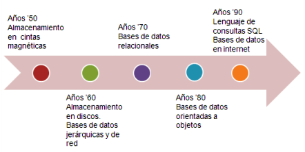

1. Bases de datos. Definición
Se denomina dato a cualquier elemento procesado por un ordenador. Se suele hablar de datos de entrada cuando se pulsa una tecla o de datos de salida cuando se envía un e-mail.
Estos datos son elementos de trabajo, no necesitan ser almacenados ni estar estructurados.
El concepto de base de datos hace referencia a datos agrupados referidos a un mismo contexto con los que se va a operar posteriormente.
Importante
Una base de datos es un conjunto de datos organizados de forma sistemática de tal modo que el acceso a éstos pueda realizarse de forma rápida y eficaz. Está constituida por entidades (datos), sus atributos y relaciones.
Desde este punto de vista, almacenar y organizar datos relativos a un mismo contexto requiere la identificación de éstos y de su localización, es decir, deben estar indexados.
En una base de datos cada elemento es identificado por un índice o clave única.
Por ejemplo, una guía telefónica es una base de datos en la que cada número de teléfono es único y está ordenado por orden alfabético de los nombres de los titulares.
Guía telefónica.
Imagen de elaboración propia
Comprueba lo aprendido
Retroalimentación
Falso
El objetivo de una base de datos es organizar datos relativos a un mismo contexto.Retroalimentación
Falso
Cada dato está identificado por una clave o índice que permite el acceso rápido y ordenado.Importante
Las condiciones que debe cumplir una base de datos son:
- Integridad de los datos.- coherencia de los datos introducidos (adecuación al tipo y cumplimiento de los atributos). Los datos deben ser válidos y consistentes.
- redundancia de los datos.- almacenamiento de los mismos datos varias veces en la misma base. En una base de datos debe evitarse o reducirse la redundancia todo lo posible.
Comprueba lo aprendido
Solución
Solución
Solución
Solución
Para saber más
Hasta finales del siglo XIX no se puso de manifiesto la necesidad de automatizar el trabajo con datos. En 1880, Hollerit creó la máquina perforadora para almacenar los datos del censo de EEUU. Este punto marcó el comienzo del trabajo con bases de datos informatizadas.
La cantidad de datos almacenados y la velocidad de acceso a ellos está ligada a la evolución de los medios de almacenamiento. En la siguiente línea del tiempo aparecen marcadas los avances en cada década.
Línea del tiempo: historia de las bases de datos.
Imagen de elaboración propia.
No te preocupes por la nueva terminología, en el siguiente apartado te familiarizarás con los términos que aparecen en la imagen.